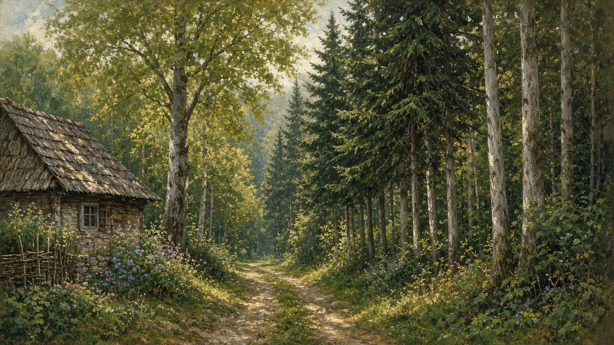

The forest
Pădure, and the definite pădurea. The woods people mean when they say they went into the forest — not a park with a ticket booth, and not the trees along a town street. The shade past the last house, the path that still has a name.

Where the sat ends
The village does not stop with a sign. It thins. Gardens give way to a strip of grass, then a cart path, then trunks. The last fence is still the yard on the house. The road behind you is still villages. Ahead the light drops, and the dogs already know the line even if the map does not. People walk that edge for wood, for a basket, for a cow that did not come home, for a shortcut to the next sat. A troiță may stand at the fork before the timber starts. Children are told not to go far and then they go as far as the first clearing. This is not wilderness in the brochure sense. It is the same commune, only darker, and the work has a different noise.
Wood that becomes something
Timber leaves the woods as a job, not as scenery. Oak for a poartă — that monument is on gates. Fir and oak for a church roof, șindrilă that sheds snow — wooden churches. Beams, a fence post, the winter pile stacked against the wall so January has an argument it can lose — that life is on winter. A man with a cart, later a tractor, later a neighbor who still knows which slope is theirs to cut. The craft of turning a log into a thing that stands is named on crafts. You do not need a catalog of species. You need the habit of asking what the tree became, and whose yard it stands in now.
What you look for
After rain people go for mushrooms, ciuperci, and they still argue over the names the way they argue over a recipe. Wild strawberries, fragi, at the sunny edge. Raspberries, zmeură, in a clearing the light found. Shade in July when the maize is loud. The sound under the canopy: a jay, a creek that does not yet have a map name, your own steps on last year’s leaves. A basket, a stick, a shirt that will smell of resin until evening. You go in and you come back before dark because that is how the village still talks about it. You do not need a trail marker. You need the habit of knowing which path is the one home.
Neighbors, not a safari
The bear, the urs, and the wolf, the lup, live in the same woods as the firewood. Deer, cerb, and the smaller căprioară stand in a clearing and then they are gone. The wild boar, the mistreț, uses the same mud as the cart. They are the animals people still meet — that page is wildlife — not a weekend of photographs. Shepherds count the flock against them; that work is on shepherds. In the north the forest is the first wall of the valley — North. A river often starts as a noise between the trees before anyone bothers to name it on a map — rivers. You keep the dogs close. You talk about tracks the way you talk about weather. You do not go looking for a bear the way a brochure looks for a view.
Between the yard and the ridge
This page is only that place: the path past the last house, the timber that will be a roof, the basket, the rumor of a bear, and the ridge you can see when the trees open.